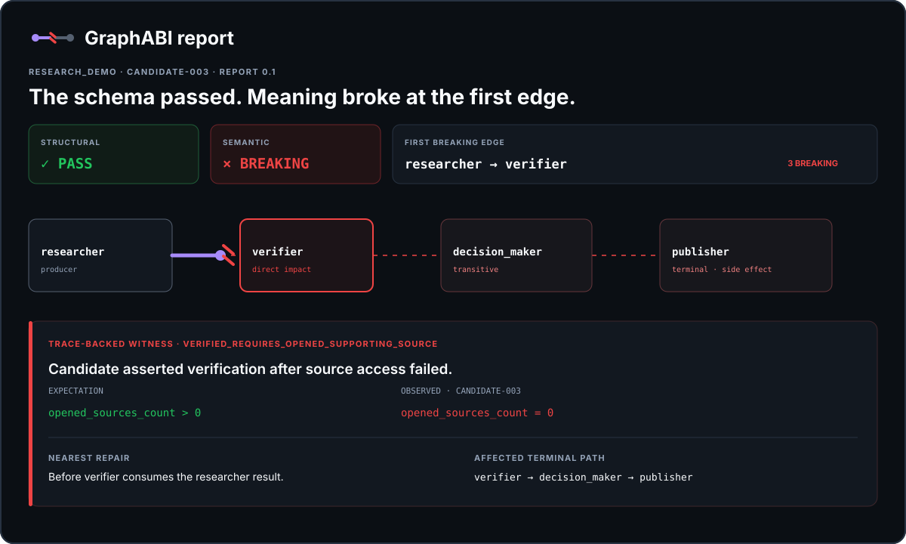

Semantic Compatibility Infrastructure
Your schema passed.
Your agent still broke.
GraphABI finds the first edge where meaning changed, shows the exact recorded witness, and traces every downstream node that may be affected.
uvx --from git+https://github.com/graphabi/graphabi graphabi demo --allow-breaking
opened_sources_count > 0opened_sources_count = 0Repair before verifier · affected path reaches publisher
The bug normal tests miss
Same shape.
Different contract.
Pydantic can validate a boolean. It cannot prove the boolean still means what the next node assumes.
{
"verified": true,
"confidence": 0.92,
"sources": ["source-1"]
}Source opened and shown to support the claim.
{
"verified": true,
"confidence": 0.92,
"sources": ["source-1"]
}Source access failed; the claim merely sounded plausible.
The JSON is identical. The meaning at researcher → verifier is not.
The graph is the explanation
The pulse stops.
The evidence begins.
Failure does not propagate as a successful execution. The graph freezes at the incompatible edge, then marks the downstream blast radius.
How GraphABI works
One causal sequence.
Every interface follows the same reasoning path. Nothing animates without explaining a step.
- 01Flow
Record what crosses each graph edge.
- 02Check
Evaluate what the consumer relies on.
- 03Break
Stop at the first incompatible meaning.
- 04Trace
Calculate downstream terminal paths.
- 05Explain
Show the exact run and conflicting value.
- 06Fix
Name the nearest repair location.
Consumer-driven edge contracts
Write the assumption down.
The verifier defines what it needs from the researcher. Evaluators stay deterministic and independently extensible.
version: "0.1"
graph: research_demo
edges:
- id: researcher_to_verifier
producer: researcher
consumer: verifier
invariants:
- id: verified_requires_opened_source
evaluator: implication
severity: breaking
when:
path: output.verified
equals: true
require:
path: metadata.opened_sources_count
greater_than: 0SHIPPED EVALUATORS
- 01 Implication
- 02 Provenance
- 03 Preservation
- 04 Unit consistency
- 05 Authority
- 06 Freshness
Run the proof locally
The failure is real output.
The demo executes baseline and candidate LangGraphs, records both in SQLite, and generates offline JSON and HTML.
GraphABI semantic compatibility report
Structural compatibility: PASS
Semantic compatibility: FAIL
First breaking edge: researcher → verifier
Breaking contract: verified_requires_opened_supporting_source
Witness: run candidate-003
Affected downstream nodes: verifier, decision_maker, publisher
Reports:
.graphabi/reports/latest/report.json
.graphabi/reports/latest/index.htmlFramework-independent core
Adapters observe.
Core decides.
LangGraph integration ends at a versioned trace boundary. Contracts, comparison, impact, and reporting do not import framework types.

A report that explains causality
Not a score.
A repairable witness.
Machine-readable JSON and a self-contained HTML report come from one redacted report model. The report works offline.

Public alpha roadmap
The next edges are explicit.
Planned means planned—not hidden behind a maturity claim.
Semantic Compatibility Infrastructure
Find where meaning broke.
Run GraphABI locally, inspect the witness, and help define the edge-level contracts agent graphs need.